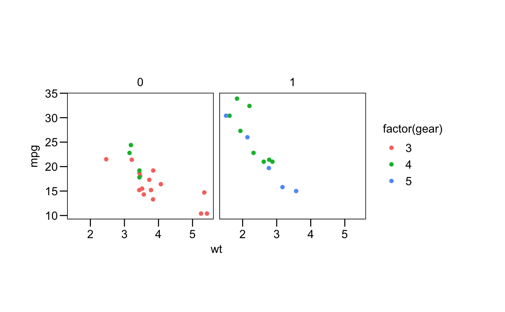
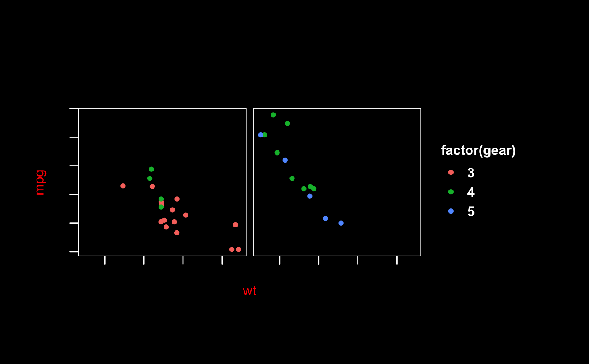

par().
Not all par() parameters, are supported, and not all are relevant to
ggplot2 themes.R/base.R
theme_par.RdCurrently this theme uses the values of the parameters:
"code", ""ps"", "code" "family", "fg",
"bg", "adj", "font", "cex.axis",
"cex.lab", "cex.main", "cex.sub", "col.axis",
"col.lab", "col.main", "col.sub", "font",
"font.axis", "font.lab", "font.main",
"font.sub", "las", "lend",
"lheight", "lty", "mar", "ps", "tcl",
"tck", "xaxt", "yaxt".
theme_par(base_size = par()$ps, base_family = par()$family)
| base_size | base font size, given in pts. |
|---|---|
| base_family | base font family |
This theme does not translate the base graphics perfectly, so the graphs produced by it will not be identical to those produced by base graphics, most notably in the spacing of the margins.
Other themes:
theme_base(),
theme_clean(),
theme_foundation(),
theme_igray(),
theme_solid()
library("ggplot2") p <- ggplot(mtcars) + geom_point(aes(x = wt, y = mpg, colour = factor(gear))) + facet_wrap(~am) p + theme_par()# theme changes with respect to values of par par(font = 2, col.lab = "red", fg = "white", bg = "black") p + theme_par()